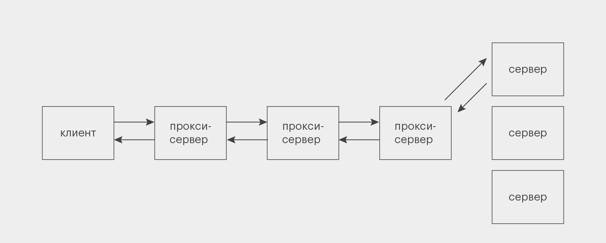

REST API
REST API — это архитектурный подход, который устанавливает ограничения для API: как они должны быть
устроены и какие функции поддерживать. Это позволяет стандартизировать работу программных
интерфейсов, сделать их более удобными и производительными.
Слово REST — акроним от Representational State Transfer, что переводится на русский как «передача
состояния представления», «передача репрезентативного состояния» или «передача „самоописываемого“
состояния».
В отличие от, например, SOAP API, REST API — не протокол, а простой список рекомендаций, которым
можно следовать или не следовать. Поэтому у него нет собственных методов. С другой стороны, его
автор Рой Филдинг создал ещё и протокол HTTP, так что они очень хорошо сочетаются, и REST обычно
используют в связке с HTTP. Хотя новичкам нужно помнить: REST — это не только HTTP, а HTTP — не
только REST.
Всего в REST есть шесть требований к проектированию API. Пять из них обязательные, одно —
опциональное:
-
Клиент-серверная модель (client-server model)
Это требование отделяет друг от друга два понятия: клиент и сервер. Сервер — программа, в которой хранятся и обрабатываются ресурсы. Сервер может располагаться на одном или нескольких компьютерах; но даже в одном компьютере может быть несколько виртуальных серверов. Допустим, изначально HTML-код этой статьи хранился где-то на серверах Skillbox. Клиент — программа, которая запрашивает у сервера доступ к ресурсам. Для этого она использует API. Когда ваш браузер запрашивает у сервера Skillbox эту веб-страницу, он выступает в роли клиента. Получается структура, при которой клиент направляет к серверу запрос, а в ответ получает ресурсы. Такое разделение позволяет создавать клиент и сервер независимо друг от друга, что ускоряет и упрощает разработку.
-
Отсутствие состояния (statelessness)
Второй принцип настолько важен, что даже отражён в названии архитектурного стиля — Representational State Transfer. Это значит, что на сервере не хранится никаких данных о прошлых взаимодействиях с клиентом — каждый запрос должен содержать всю информацию для его обработки. Например, кто-то запросил последнее сообщение от ООО «Рога и копыта». В этом запросе содержится вся информация, которая нужна серверу, чтобы дать корректный ответ. Если клиент потом хочет получить предпоследнее сообщение, то он не может просто сказать: «Дай мне соседний ресурс» — ему нужно заново составить полный запрос по всем правилам. Это снижает нагрузку на сервер, что особенно полезно, если к нему подключено одновременно много клиентов. Не нужно хранить дополнительную информацию о прошлых обращениях каждого из них. Достаточно обработать каждый запрос в отдельности.
-
Кэширование (cacheability).
Иногда клиент запрашивает с сервера одни и те же данные по несколько раз — например, вы постоянно обращаетесь к какому-нибудь важному письму в сервисе для учёта деловых переписок. Если при каждом таком запросе сервер будет с нуля собирать нужные данные и отправлять их клиенту, нагрузка на систему повысится — особенно когда таких повторов много. Решением проблемы в REST API стало кэширование, то есть сохранение части данных у клиента или на промежуточных серверах. Однако тут тоже важно подойти к делу без излишнего фанатизма и не кэшировать всю информацию подряд. Во-первых, для этого потребовались бы слишком большие объёмы памяти. Во-вторых, какие-то данные (скажем, количество исходящих писем) со временем могут устаревать — зачем же держать этот неактуальный хлам в кэше? Именно поэтому в каждом ответе сервера на запрос есть пометка о том, можно ли его кэшировать.
-
Единообразие интерфейса (uniform interface).
Должен быть единый способ обращения к каждому ресурсу. Например, мы хотим добавить в наш сервис новую функциональность для просмотра данных о денежных переводах. Понятно, что логика интерфейса для обращения к ним должна быть такой же, как и для всего, что было в сервисе раньше. Файлы обычно передаются клиенту не в том виде, в котором хранятся на сервере. В вебе их часто преобразуют в JSON или XML и только потом отправляют клиенту. Ответ на запросы к новому ресурсу должен приходить в том же формате, что и к старым, и сразу же содержать дополнительную информацию: что разрешается делать с ресурсом, можно ли его изменять и удалять на сервере и так далее.
-
Многоуровневая система (layered system).
До сих пор мы рассматривали сервер как единую сущность. Но его структура куда сложнее. Между ним и клиентом есть несколько промежуточных узлов, выполняющих вспомогательные функции, — прокси-серверы. Они используются для кэширования, обеспечения безопасности, дополнительной обработки данных. Если основных серверов несколько, то дополнительные серверы-балансировщики могут распределять нагрузку между ними и решать, в какой из них направлять запрос:  Никто из участников цепочки не знает всего пути, который проходит запрос, — только своих «соседей» справа и слева. Ни клиент, ни один из прокси-серверов не знает, к кому он обращается — к основному сервису или к другому прокси. В REST API это работает в обе стороны: никакие серверы (ни основные, ни прокси) не знают, кому отправляют ответ и уходит ли он куда-то дальше.
-
Код по требованию (code on demand) — необязательно.
Этот принцип означает, что сервер в ответ на запрос может отправить исходный код, который выполняется уже на стороне клиента. Благодаря этому можно передавать целые сценарии. Например, динамические элементы пользовательского интерфейса, написанные на JavaScript. В REST API требование необязательно, потому что не всем сайтам и сервисам нужно умение работать с готовыми скриптами.
Методы REST API
Так как REST — архитектурный подход, а не протокол, в нём не заложено никаких конкретных методов. Но
чаще всего его применяют вместе со стандартом HTTP, в котором заложены собственные методы.
Если кратко, то в HTTP прописан набор действий, который можно описать аббревиатурой CRUD: create —
«создать», read — «прочитать», update — «обновить», delete — «удалить».
Для каждого такого действия существуют один или несколько глаголов — это и есть методы. Например,
GET для чтения, а PUT и PATCH — для разных видов обновления. Глагол-метод применяется к URL-адресу
нужного ресурса, который в «предложении» выполняет роль существительного.